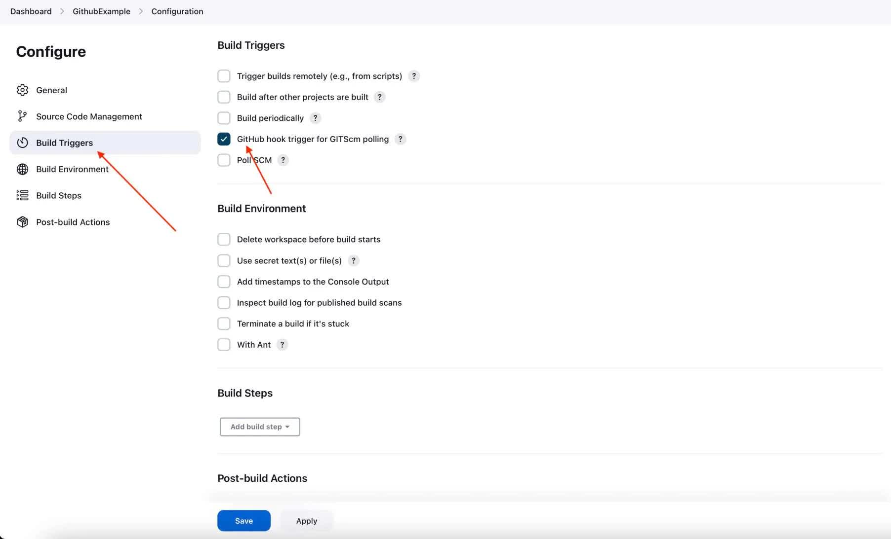

Partie 2 : Premiers Pas avec Jenkins
Objectifs
Dans cette deuxième partie, vous allez apprendre à :
- Créer et exécuter des jobs simples et paramétrés dans Jenkins.
- Comprendre la structure d’un job et ses étapes.
- Planifier et déclencher des builds automatiquement avec différentes méthodes, y compris les webhooks.
2.1 Création d’un job Jenkins basique
Présentation des types de jobs dans Jenkins
Jenkins propose plusieurs types de jobs, chacun adapté à des besoins variés :
- Freestyle : Un job flexible pour des tâches simples comme exécuter des scripts ou déployer des fichiers. Idéal pour commencer et tester des configurations de base.
- Pipeline : Un job basé sur un script Jenkinsfile, permettant de créer des workflows complexes en tant que code.
- Multibranch Pipeline : Spécialement conçu pour les projets gérant plusieurs branches, chaque branche déclenche automatiquement un pipeline dédié.
- Folder : Permet de regrouper plusieurs jobs dans un dossier, utile pour organiser des projets de grande envergure.
Dans cette partie, nous allons commencer avec un job Freestyle, qui convient bien aux démonstrations et aux configurations de base.
Création d’un job Freestyle
- Accédez au tableau de bord Jenkins et cliquez sur New Item (Nouvel élément).
- Nommez votre job (par exemple, “Job de test”) et sélectionnez Freestyle project (Projet Freestyle).
- Cliquez sur OK pour créer le job.
Exécution d'un script Shell ou de commande Windows simple
Pour ce premier job, nous allons configurer un script simple qui affiche "Hello, World!" :
- Dans les paramètres du job, allez à la section Build (Construire) et choisissez Execute shell (ou Exécuter une commande sous Windows sur un système Windows).
- Dans la zone de texte, entrez la commande suivante :
echo "Hello, World!" - Cliquez sur Save (Sauvegarder) pour enregistrer le job.

Source: https://www.geeksforgeeks.org/creating-and-configuring-freestyle-projects-in-jenkins/
Création de jobs paramétrés
Les jobs paramétrés permettent de personnaliser l’exécution d’un job avec des valeurs dynamiques, comme le choix d’une branche spécifique ou l’ajout d’un nom de version.
Pour configurer un job paramétré :
- Ouvrez un job existant ou créez-en un nouveau.
- Cochez l'option This project is parameterized (Ce projet est paramétré) dans les paramètres du job.
- Cliquez sur Add Parameter (Ajouter un paramètre) pour choisir le type de paramètre :
- String Parameter : Pour entrer du texte (ex. : nom de branche).
- Boolean Parameter : Pour activer ou désactiver certaines étapes.
- Choice Parameter : Sélectionner parmi plusieurs options prédéfinies.
- File Parameter : Téléverser un fichier à utiliser dans le job.
Exemple : Créer un job avec un paramètre de branche
- Ajoutez un String Parameter nommé
BRANCH_NAME. - Dans la section Build, configurez une commande Shell pour utiliser le paramètre :
echo "Building branch: $BRANCH_NAME" - Lors de l’exécution du job, Jenkins vous demandera la valeur de
BRANCH_NAME, qui sera utilisée dans le script.

Source: https://www.baeldung.com/ops/jenkins-parameterized-builds
2.2 Gestion des Builds
Déclencher un build manuellement
Pour lancer un job manuellement :
- Accédez à la page du job et cliquez sur Build Now (Construire maintenant).
- Jenkins exécute la commande définie, et un numéro de build apparaît dans l’historique des builds.
Visualisation des logs et des résultats du build
Pour examiner le résultat :
- Cliquez sur le numéro du build (par exemple, #1) dans la section Build History.
- Accédez aux Console Output (Sortie de console) pour voir les détails de l’exécution du job. Vous devriez y voir la sortie de votre script, par exemple, "Hello, World!".
Rebuild, copie et suppression des builds
- Rebuild : Cliquez sur Rebuild dans la page de détails pour relancer le job avec les mêmes paramètres.
- Copie : Pour cloner un job, choisissez Copy dans les paramètres et donnez un nouveau nom.
- Suppression : Dans les paramètres du job, choisissez Delete pour supprimer un job dont vous n’avez plus besoin.

2.3 Planification des Builds
Exécutions périodiques : cron et triggers
Jenkins permet d’automatiser les builds à des intervalles réguliers grâce à des expressions cron :
- Dans la configuration du job, cochez Build periodically (Construire périodiquement).
- Entrez une expression cron. Par exemple, pour exécuter le job chaque jour à minuit :
Cette syntaxe permet de planifier un build quotidien à minuit tout en optimisant la répartition des ressources.H 0 * * *
Triggers de build : SCM polling
Le SCM polling (surveillance du dépôt) permet à Jenkins de surveiller un dépôt de code (comme Git) et de déclencher un build lorsque des modifications sont détectées.
- Cochez Poll SCM dans les paramètres du job.
- Définissez une expression cron pour la fréquence de surveillance. Par exemple :
Ce cron vérifie les modifications toutes les 5 minutes.H/5 * * * *
Triggers de build : Webhooks
Les webhooks permettent à des services externes (comme GitHub) de déclencher des jobs Jenkins lorsqu’il y a des mises à jour. Pour configurer un webhook :
- Dans Jenkins, copiez l’URL du job que vous souhaitez déclencher.
- Dans les paramètres de votre dépôt (par exemple, sur GitHub), configurez un webhook en collant l’URL du job Jenkins.
- Désormais, chaque fois qu’un commit ou une PR est créée, Jenkins recevra une notification et déclenchera le build.
Remarque : Les webhooks sont utiles pour des projets où des modifications sont apportées fréquemment et où un build doit être déclenché instantanément.

Tutoriels pour le setup d'un webhook Github avec Jenkins :
- https://medium.com/@sangeetv09/how-to-configure-webhook-in-github-and-jenkins-for-automatic-trigger-with-cicd-pipeline-34133e9de0ea
- https://www.blazemeter.com/blog/how-to-integrate-your-github-repository-to-your-jenkins-project
Exercice : Créer un job Jenkins pour exécuter un script “Hello, World!” et planifier un build quotidien
Objectif de l'exercice : Créer et planifier un job Jenkins qui exécute une commande de type “Hello, World!” et configurez-le pour s’exécuter automatiquement.
Étapes de l’exercice :
- Créer un nouveau job : Depuis le tableau de bord Jenkins, créez un job Freestyle nommé “Hello World”.
- Configurer le build :
- Ajoutez une étape Execute shell (ou Commande Windows) avec la commande :
echo "Hello, World!"
- Ajoutez une étape Execute shell (ou Commande Windows) avec la commande :
- Déclencher manuellement le build : Une fois le job sauvegardé, lancez-le en utilisant Build Now et vérifiez la sortie de console.
- Planifier un build quotidien : Dans la configuration du job, activez Build periodically et entrez l’expression cron suivante pour un build quotidien à 8h00 :
H 8 * * * - (Optionnel) Ajouter un paramètre de branche : Configurez le job pour inclure un String Parameter nommé
BRANCH_NAME, et modifiez le script pour afficher cette valeur.
Ressources supplémentaires
- Documentation de Jenkins - Types de Jobs
- Syntaxe cron de Jenkins
- Configurer un webhook avec GitHub et Jenkins